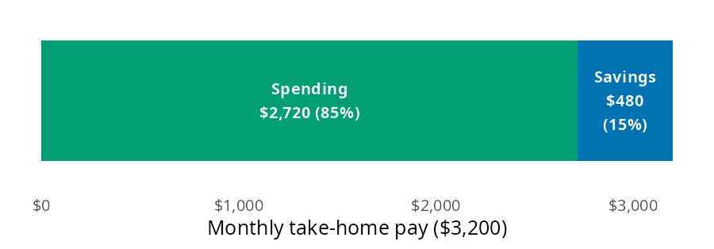
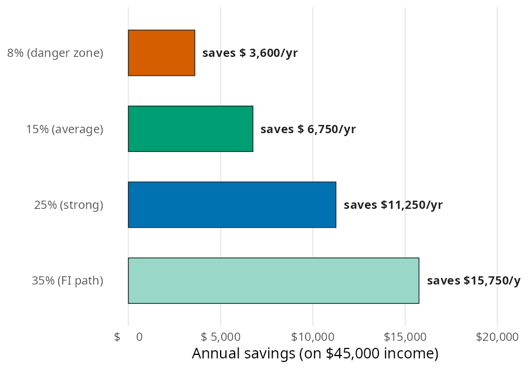

first_job_rate = savings_rate(income=3200, spending=2720)
first_job_rate15.0How much of your paycheck do you actually keep? The Savings Strategies chapter of the book argues that your savings rate is the one number worth tracking above all others, because it sets how fast wealth builds. In this page I’ll answer that question with savings_rate(), using the chapter’s numbers so you can check every result against the book. Then we’ll borrow a few functions from other chapters to follow one paycheck from savings rate to emergency fund to long term investing.
savings_rate() follows the conventions on the Get started page. Like the other ratio functions, it returns a percent, not a decimal.
| Function | Returns | Units |
|---|---|---|
| savings_rate() | the share of income not spent | percent (15 is 15%); negative when spending exceeds income |
The chapter’s first job takes home $3,200 a month and spends $2,720 of it. Every dollar of the paycheck goes to either spending or savings, so the question is how big the savings slice is.
Think of the take home pay as one bar. Spending fills most of it, and savings is the slice left at the end:

savings_rate() subtracts spending from income, divides by income, and multiplies by 100:
The first job saves 15% of take home pay, which lands in the chapter’s average tier (10% to 20%). The result is a percent, so 15.0 means 15%. Income and spending need to cover the same period; a monthly spending total against a yearly salary gives a rate that is badly wrong.
The chapter gives four benchmarks: under 10% is the danger zone, 10% to 20% is average, 20% to 30% is strong, and 30% or more is the path to financial independence. Percentages are easy to compare but hard to picture, so the chapter converts one example from each tier into dollars on a $45,000 income:

Each bar is income minus spending. Because savings_rate() accepts arrays, one call can work backward from the dollars in each bar to the tier it belongs to:
saved = [3600, 6750, 11250, 15750]
pl.DataFrame({
"tier": ["danger zone", "average", "strong", "FI path"],
"saved": saved,
"rate": savings_rate(income=45000, spending=[45000 - s for s in saved]),
})| tier | saved | rate |
|---|---|---|
| str | i64 | f64 |
| "danger zone" | 3600 | 8.0 |
| "average" | 6750 | 15.0 |
| "strong" | 11250 | 25.0 |
| "FI path" | 15750 | 35.0 |
The rates come back as 8, 15, 25, and 35, one for each bar. Moving from the danger zone to the strong tier on the same salary means saving an extra $7,650 a year.
The chapter’s central claim is that savings rate matters more than income. It compares someone earning $45,000 and spending $36,000 with someone earning $75,000 and spending $67,500. Passing both people to savings_rate() at once gives their rates:
earners = pl.DataFrame({
"income": [45000, 75000],
"spending": [36000, 67500],
})
earners = earners.with_columns(
saved=pl.col("income") - pl.col("spending"),
rate=savings_rate(income=earners["income"], spending=earners["spending"]),
)
earners| income | spending | saved | rate |
|---|---|---|---|
| i64 | i64 | i64 | f64 |
| 45000 | 36000 | 9000 | 20.0 |
| 75000 | 67500 | 7500 | 10.0 |
The lower earner saves 20% and the higher earner saves 10%. To see where each one ends up, we can borrow future_value_series() from Investing Basics. It grows a yearly contribution at 7% (rate is a decimal per period, and here the period is a year):
years = [23, 24, 25, 26]
pl.DataFrame({
"years": years,
"saves_20_pct": future_value_series(contribution=9000, rate=0.07, periods=years),
"saves_10_pct": future_value_series(contribution=7500, rate=0.07, periods=years),
})| years | saves_20_pct | saves_10_pct |
|---|---|---|
| i64 | f64 | f64 |
| 23 | 480925.268097 | 400771.056748 |
| 24 | 523590.036864 | 436325.03072 |
| 25 | 569241.339444 | 474367.78287 |
| 26 | 618088.233205 | 515073.527671 |
The $45,000 earner crosses $500,000 in year 24, and the $75,000 earner crosses it in year 26. That matches the chapter’s chart. The higher saver also lives on $36,000 a year, so they need a smaller pile to stop working.
savings_rate() does one subtraction and one division, so it leaves a few things to you:
income and spending cover the same period.income is zero or negative:--------------------------------------------------------------------------- ValueError Traceback (most recent call last) Cell In[6], line 1 ----> 1 savings_rate(income=0, spending=500) File ~/projects/pkgs/Python/perfinpy/src/perfinpy/savings_strategies.py:42, in savings_rate(income, spending) 10 def savings_rate(income: ArrayLike, spending: ArrayLike) -> Numeric: 11 """Savings rate: the percent of income not spent. 12 13 From the [Savings Strategies](https://mjfrigaard.github.io/fm-finance/savings_strategies.html) (...) 40 15.0 41 """ ---> 42 income = _as_positive(income, "income") 43 spending = _as_numeric(spending, "spending") 44 return ((income - spending) / income) * 100 File ~/projects/pkgs/Python/perfinpy/src/perfinpy/_checks.py:38, in _as_positive(x, arg) 36 out = _as_numeric(x, arg) 37 if np.any(np.asarray(out) <= 0): ---> 38 raise ValueError(f"`{arg}` must be greater than 0.") 39 return out ValueError: `income` must be greater than 0.
Back to the first job saving $480 a month. The chapter says savings should be protected before they grow, so the first stop is an emergency fund. The Emergency Fund chapter uses $2,400 a month in essential expenses and a four month target. emergency_fund_target() sets the goal, and months_to_ef_goal() counts the months to reach it at $480 a month:
monthly_saved = 3200 - 2720
ef_target = emergency_fund_target(monthly_expenses=2400, months=4)
ef_months = months_to_ef_goal(
target=ef_target, current_balance=0, monthly_contribution=monthly_saved
)
ef_target, ef_months(9600.0, 20)At a 15% savings rate, the $9,600 fund is full in 20 months. After that, the same $480 can go to investing instead. future_value_series() takes a monthly rate here, so the 7% yearly return is divided by 12:
invested = future_value_series(contribution=monthly_saved, rate=0.07 / 12, periods=30 * 12)
invested585586.0779724534Thirty years of $480 a month could grow to about $585,586. Nothing about the salary changed; the savings rate did all the work.
Your savings rate is the lever you fully control, and savings_rate() measures it as a percent of income. One call can check a single paycheck, place several savings amounts on the chapter’s benchmark tiers, or compare people with different salaries. Paired with the emergency fund and investing functions, it shows how a modest rate turns into a protected cushion and then long term wealth.